Content
Bio

Hi! I'm Celine 👋
I was born and raised in Bandung, Indonesia. My parents weren't fortunate enough to receive proper college education like I do today. They were merely small business owners of a local grocery store. However, I've always dreamt of studying abroad. Despite my family's financial struggles, my dad has always supported my decision as long as I helped pay the tuition expenses by working part-time. I'm glad I did, because I've met and learned from so many amazing people with various cultures and backgrounds. My experiences in Canada have taught me a lot and made me grow as a person. The sacrifices were worth it, and they've brought me to where I am today.
What I Do Now
Currently, I am an undergraduate student studying Interactive Arts & Technology in Simon Fraser University, where I am sharpening my skills in UX design, joining communities and leading the design team in Enactus SFU! Outside of design, I love musical theatre and art. You will often find me watching Broadway musicals, listening to R&B music, playing the piano, or belting out tunes at karaoke nights with my friends!
Case Study 1
Tough Titties For Emma Hands
Overview
This is a 2-week project for Eunoia Hackathon, the premise of this project was to identify an opportunity that can be solved through a UX intervention for an existing business in which we are randomly assigned to. The intervention needed to be backed with design decisions, evidence and a clear rationale that encompassed both user and business value. Our client, Tough Titties Designs, is a fashion apparel and stationery business founded by Emma Hands. The business sells products such as enamel pins, stickers, t-shirts and many more with messages related to women empowerment and breast cancer awareness. While Emma primarily sells her creations on Etsy, retail and in-person markets, she is considering shifting the focus of product sales to her website due to the high commission fees associated with the current platforms. Ultimately, we decided to intervene Emma’s digital touchpoints to leverage Tough Titties Design’s brand values and mission through a compelling storytelling experience.
- ROLE: UX/UI Designer, Design System Engineer, Rapid Prototyping.
- TOOLS: Figma, Adobe Photoshop
- TEAM: Celine August Santoso, Stephanie Ma
- CLIENT: Emma Hands Design
- DURATION: 2 Weeks (April 2023)
Tough Titties Design’s Current Digital Touchpoints Are Not Effectively Engaging Customers and Driving Sales.
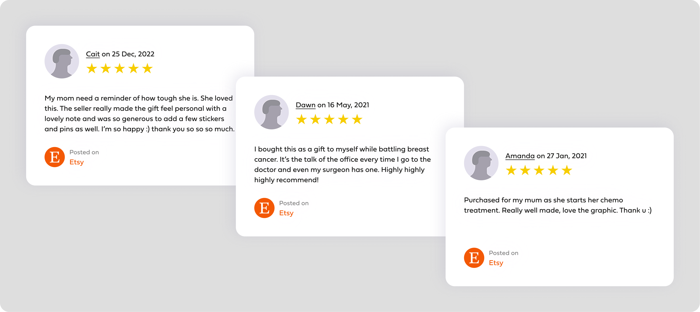Shown in Figure 1.0, only 3 out of 220 customer reviews in Emma’s Etsy store are associated with breast cancer topics. This means only about 1.36% of total reviews talked about the brand’s story and mission behind each products.
Framing the Problem Space
To gain a deeper understanding of the issue, our team conducted a one-on-one interview with the client and identified three key brand pillars that helped us further understand and represent Tough Titties Design’s identity and offerings:
- Spreading Awareness: Supporting those affected by cancer through donating to charities and raising awareness.
- Expressing Individuality: Empowering individuals by spreading messages of strength, resilience, and self-expression.
- Community Platform: Connecting people to build a community, foster understanding, compassion, and support.
- The Problem Space: Emma Hands has noticed that her in-store and market experience is much more effective in promoting her products, story and company values. Meanwhile, Tough Titties Design’s digital touchpoints struggle to build trust with customers due to a lack of credibility.
- The Framing: How might we enhance Tough Titties Design’s digital storytelling experience into a credible online presence that builds trust, drives engagement and fosters a sense of community for breast cancer survivors and supporters?
Primary Research
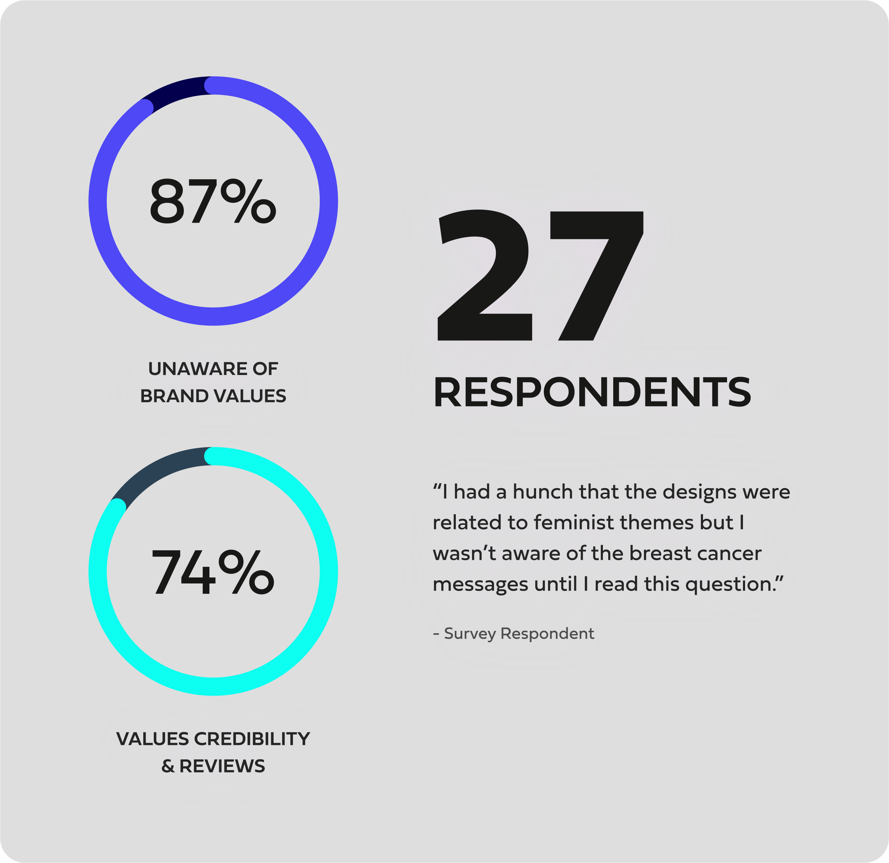
- User Survey: We conducted an online survey with online shoppers ages 25-40 to understand customer behavior and perception towards the current Tough Titties Designs website. The survey was composed of questions about common user pain-points at ecommerce sites, the high-priority qualities of a satisfactory online shopping experience and motivations to revisit the website. Additionally, we used the results to determine which features or components were important for the user interface and discover if there were any new opportunities we could address.
- Qualitative Research: We conducted 30 minute qualitative interviews with 5 small business online shoppers to gain a deeper understanding of the target audience and validate the findings of our quantitative research. Additionally, the research aims to identify potential areas of improvement for the brand's website and user experience, as well as opportunities for effective emotional marketing and storytelling.
Key Insights
Insights gathered from interviews and research guided our decisions.
- Credibility as a Purchase Factor: Recommendation and positive reviews plays a significant role in purchase decisions. Customer’s feel more secure in buying products on global marketplace sites and in-person stores due to their credibility and shipping convenience.
- Quality and Design of Products: A substantial majority of customers value the quality and design of products, indicating a positive aspect that can be leveraged in marketing and branding efforts.
- Transparency and Trust: Customers are more likely to trust small businesses that communicates its values transparently. Inviting customers to participate in the brand's story and mission can help maximize impact and build a connection with customers.
- Motivations to Revisit the Website: Customers express a higher likelihood of making purchases and revisiting the website when presented with discounts or incentives that enhance both the initial conversion and long-term customer engagement.
The Solution: High Fidelity Prototyping & Feature Breakdowns
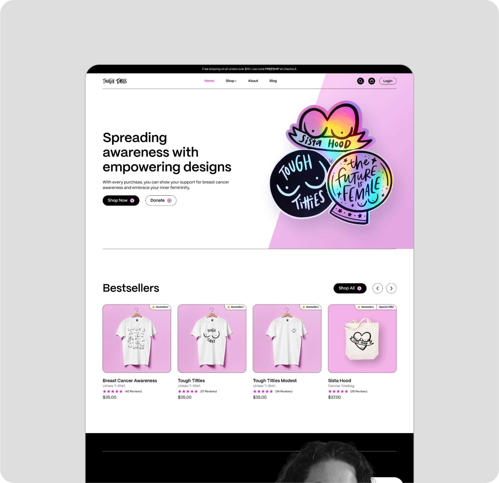The landing page design prioritizes user experience by ensuring intuitive navigation between the storytelling experience and product showcase. This user-centric approach ensures that visitors can seamlessly explore both the narrative and the product offerings — allowing users to gain a deeper understanding of Tough Titties Designs as a brand.
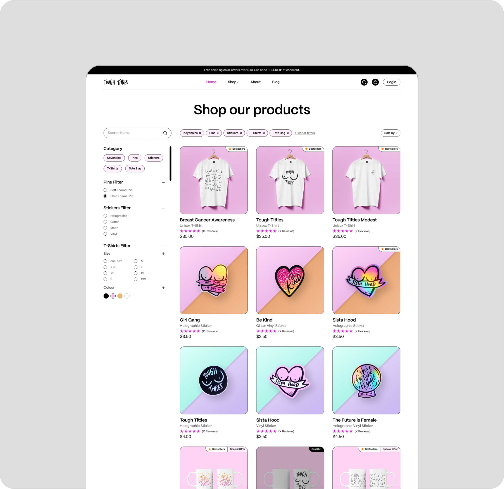Users are able to navigate the diverse range of products with filtering options and tags that showcase product availability. Enhancing this experience further, each product page features a unique narrative or description curated by Emma, adding a layer of personalization and emotional connection.
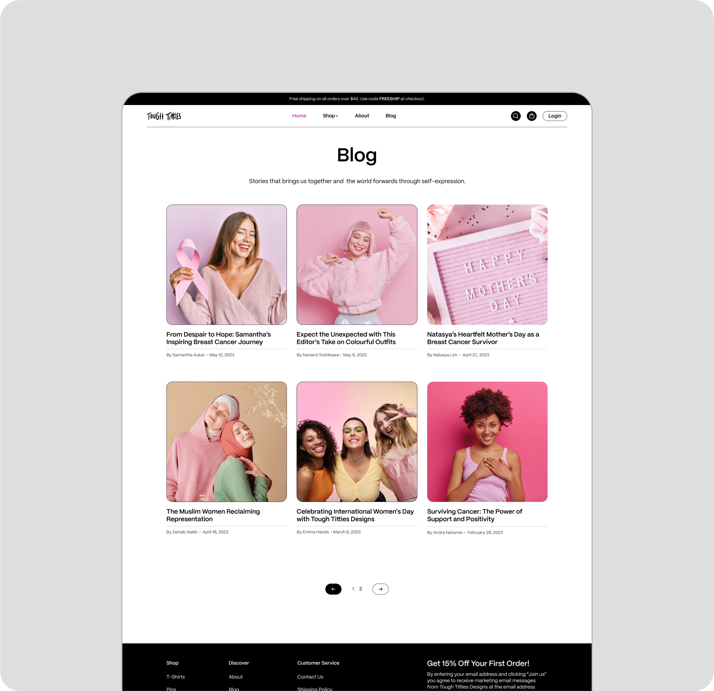To establish authenticity and trust between the company and the user, we developed a digital storytelling of the brand story to helps foster a stronger engagement between the brand and its customers. Complementing this, the Blog provides a platform for users to share their own stories and experiences. By opening this avenue for user-generated content, we not only amplify the voices within the community but also transform the brand into a vibrant storytelling hub.
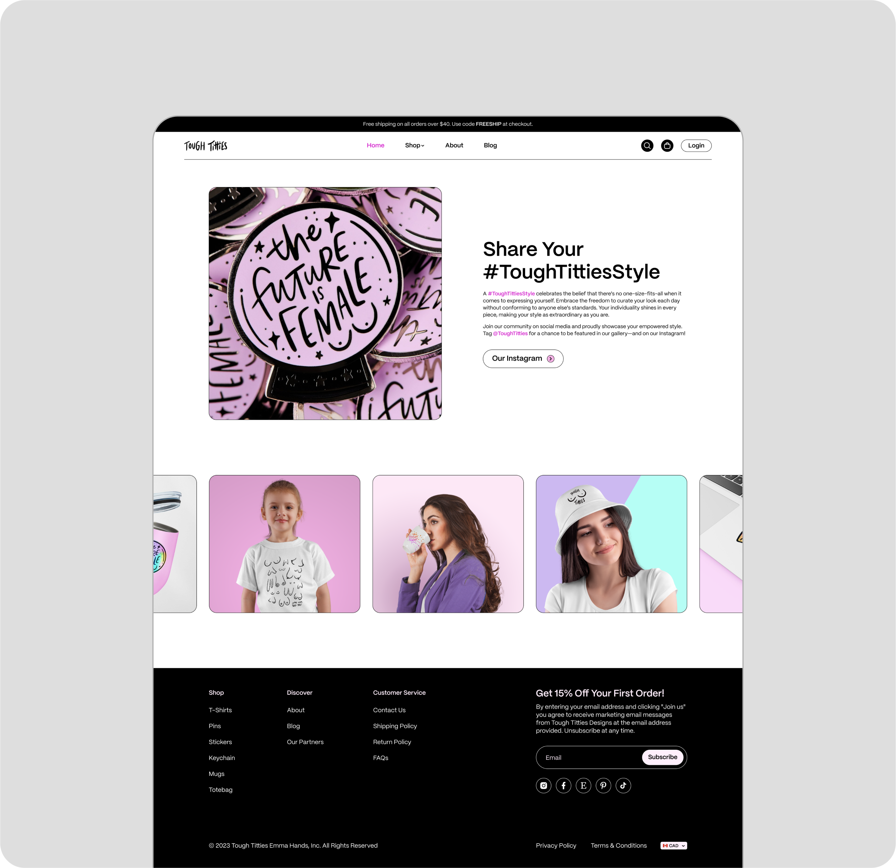To promote brand visibility on social media and cultivates a sense of inclusivity and within user community. The Gallery Spotlight elevates user engagement, strengthens our online presence, and encourages repeat visits to the website.
Project Takeaways
The amount of time and effort that went into this project cannot be accurately represented through a case study. The team and I went through so many scenarios and use cases, with consideration into feasibility from both user demographics through intensive user research, and we learned to communicate and work as a team to provide the best solution for our client. One thing that could help improve the prototype was to conduct usability testing to validate our design decisions. Unfortunately, due to limited time-constraints we weren’t able to gather enough feedback to understand the user’s overall thoughts and satisfaction with the website. All in all, I am still proud of what we have achieved, and I look forward to create more solutions to more problems in the future.
Case Study 2
Fraser Health Digital Signage
Overview
In Fraser Health, screensavers are used to reduce corporate spam and keep employees informed about company news while they are away from their desks. The primary focus of this project was to create visually engaging screensavers, design templates, and establish new visual guidelines to streamline future co-op students' work processes.
- ROLE: Art Direction, Visual Designer.
- TOOLS: Figma, Adobe Photoshop
- TEAM: Celine August Santoso
- CLIENT: Fraser Health Authority
- DURATION: 9 Days (May 2023)
The Problem
Our screensavers lacked visual appeal and consistency, leading to reduced engagement with company news. Moreover, the absence of clear design guidelines made the design process longer and less efficient for co-op students and other employees.
The Goal
The main goal of this project was to effectively communicate the company’s news, promote higher employee engagement, strengthen Fraser Health's brand identity and establish a comprehensive set of design templates to ensure consistency in screensaver creation.
Research & Analysis of the Framework
As part of the initial design process, I collaborated with my supervisor to comprehend the requirements for each screensaver request by analyzing previous works and researching on what could be improved. This involved understanding the text contents, identifying key information to establish hierarchy, and aligning the design with our branding. Ultimately, we decided that the framework would be: headline → subheading → call to action → logo.
Informational Design
The current screensavers have been ineffective in communicating their messages to internal staff due to several issues. These include inconsistent CTA placements, small QR codes that are difficult to scan, variations in logo and typography, and designs featuring bold colours that do not align with our brand's colour palette. As a result, the designs overshadow the information, making it difficult for employees to engage with the content, leading to reduced readership and impact.
Colour Palette
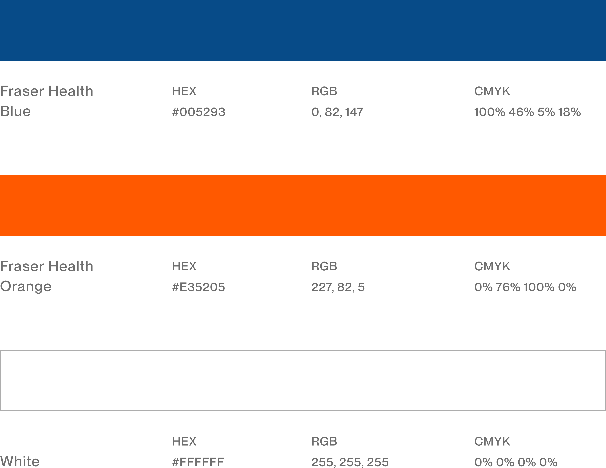These are Fraser Health’s three core colours that should be used for balance, contrast, cohesion and brand recognition. Additional hues, shades and tints are permitted to compliment our core colours.
Typography
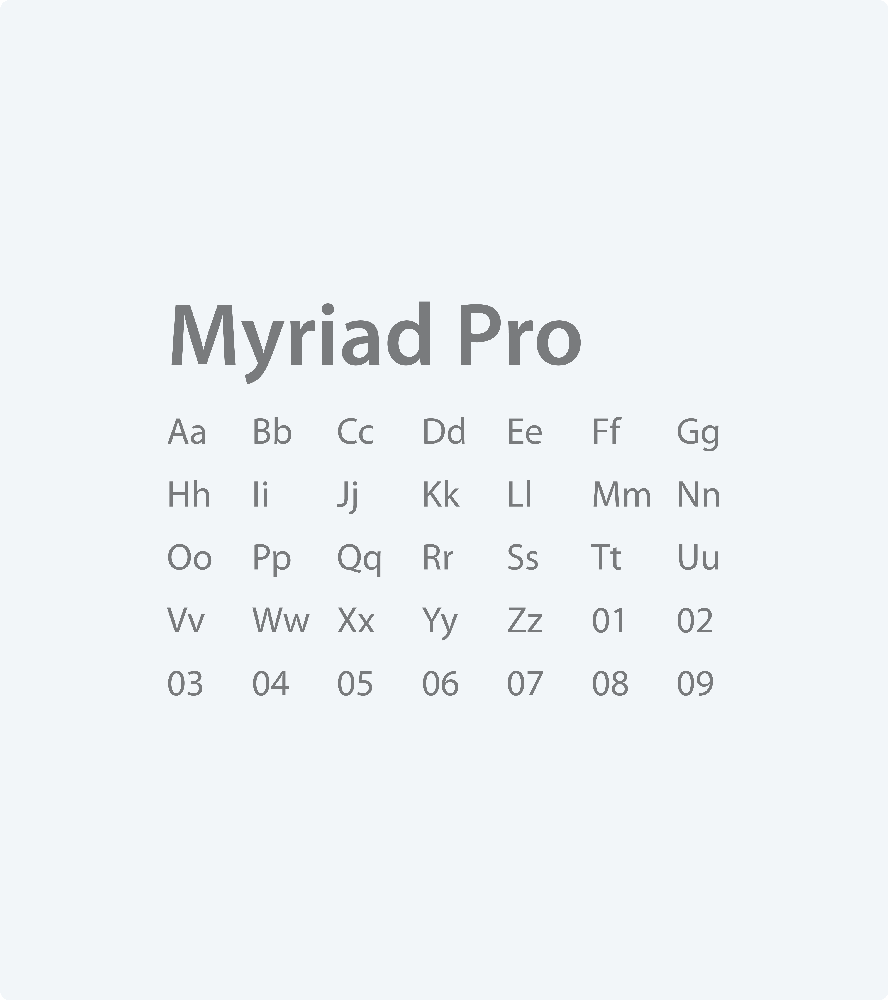The preferred font family for most Fraser Health communications is Arial. However, Fraser Health also allows similar sans serif typefaces to be used. For this project, I decided to use Myriad Pro due to the amount of type weight ranging from light to black.
The Layout
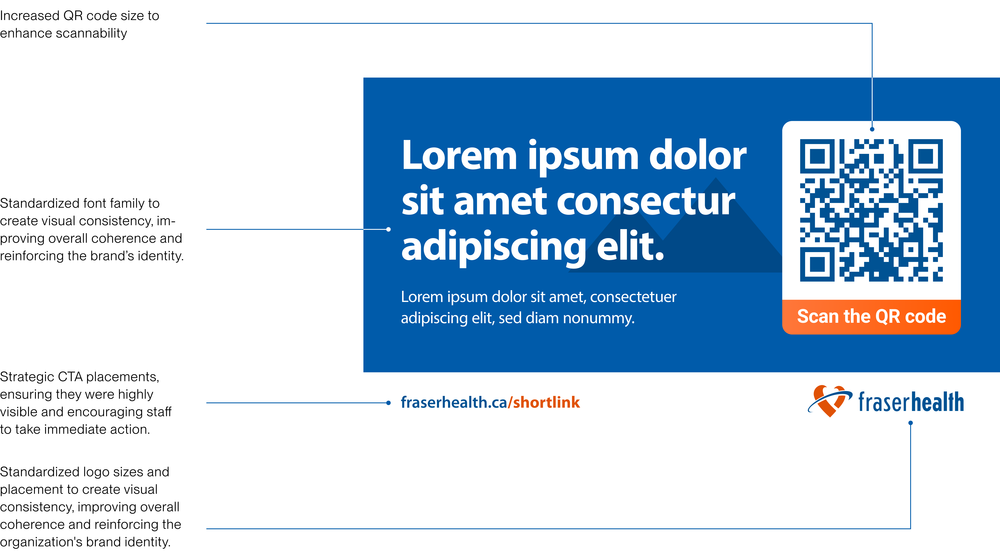After identifying pain points from the previous designs, I decided to implement the visual style guides throughout our future designs and came up with a fixed layout that provides clear and concise content tailored to our staff’s needs.
Balancing Elements
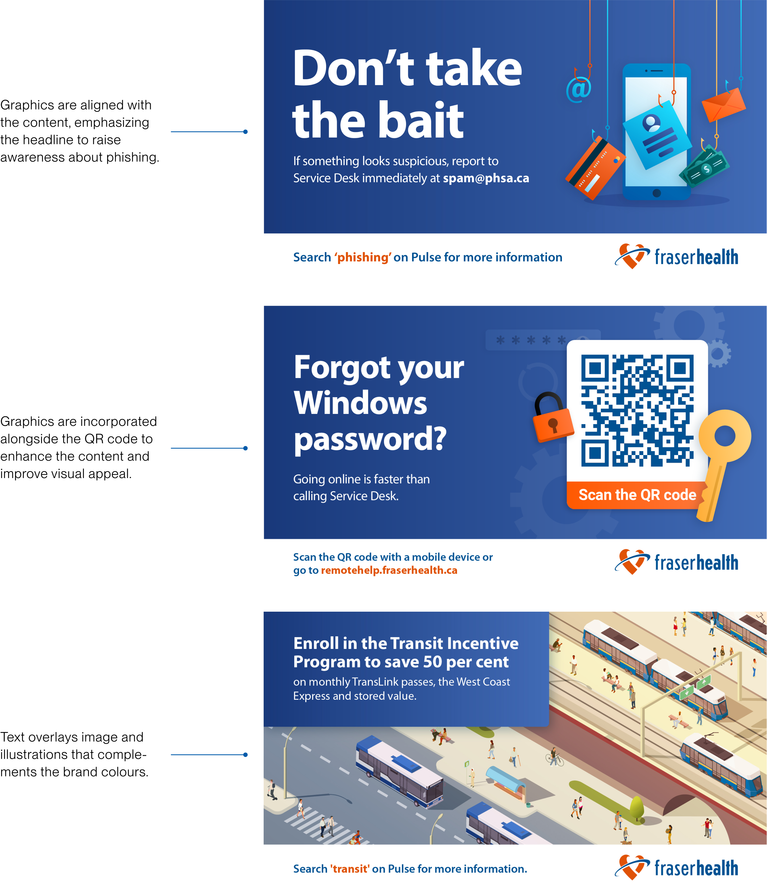For the visual elements, I struck a balance between captivating designs and clear information delivery ensuring that screensaver graphic resonated with the content without overshadowing the essential messages. To ensure clarity and prominence, important text was highlighted using different colours or in bold formatting.
The Results
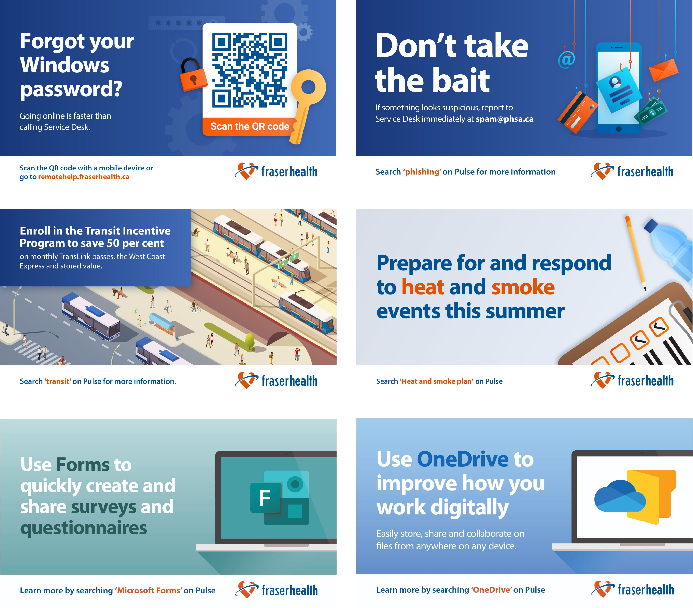These are some of the other screensavers I’ve made. After the design process, I would reach out to my supervisor to gather feedback before sending it over to my client(s) for review.
Project Takeaways
By gathering feedback from staff/clients and understanding their needs, I was able to create screensavers that resonated with the target audience, fostering a more informed and connected workforce. The incorporation of visual guidelines and design templates streamlined future co-op students' work processes, ensuring consistency while leaving room for creativity. If given more time, I would explore incorporating dynamic elements into the screensavers and refine the design templates for even more efficient creation. Ultimately, I have grown both creatively and professionally from this experience, and I look forward to applying these valuable insights in future design endeavours.